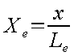

Voir exemple : Les Chutes
Chute : Ouvrage placé à la jonction de deux tronçons dont les radiers sont à des niveaux différents et permettant leur raccordement. | ||
| --Extrait de l'Encyclopédie de l'Hydrologie Urbaine et de l'Assainissement.(B. CHOCAT – Édition Lavoisier TEC&DOC) | ||
Les chutes sont utilisées dans deux situations principales :
soit pour éviter d'avoir une pente de radier trop forte dans le cas d'un terrain très pentu,
soit pour éviter d'avoir une influence aval dans le cas du raccordement d'une canalisation de petite dimension dans un gros collecteur.
Dans le premier cas, il arrive de devoir implanter des ouvrages présentant des dénivelées importantes. Dans ces circonstances, il importe de vérifier les conditions des écoulements hydrauliques afin d'éviter des perturbations ou des dégradations dans les ouvrages.
Les ouvrages de chute doivent être implantés dans des regards visitables. Ils doivent être étudiés et conçus afin d'éviter les dégradations susceptibles d'être apportées par l'énergie du flot.
Différentes dispositions peuvent être envisagées :
Réalisation d'un ouvrage comportant une masse absorbante,
Réalisation de puits hélicoïdaux ou à palier,
Adaptation de l'ouvrage au profil hydraulique.
C'est de cette dernière dont nous allons nous préoccuper dans ce module.
La conduite amont est la conduite d'arrivée dans la chute. Elle est caractérisée par son diamètre, sa pente de radier, son coefficient de Manning-Strikler et la cote NGF de son fil d'eau d'arrivée dans l'ouvrage de chute. Il est conseillé de prévoir un ouvrage dont la conduite amont est régulière sur une distance suffisamment longue (environ 20 fois le diamètre pour une canalisation à section circulaire).
La conduite aval est la conduite de départ du flot conservé. Elle est caractérisée par son diamètre, sa pente de radier, son coefficient de Manning-Strikler et la cote NGF du fil d'eau de départ de l'ouvrage de chute.
L'engouffrement du flot dans la canalisation pourra être favorisé par un dispositif de contraction.
Hydrouti donne les informations nécessaires au dimensionnement de la chambre de chute, puisqu'il calcule l'écoulement hydraulique (cf. « 2.3.3 »« . - »« Étude du profil hydraulique » ).
A partir de la dénivelée des radiers, du diamètre de la conduite aval et de la trajectoire de l'eau, Hydrouti propose une longueur minimale de l'ouvrage de façon à ce que le jet ne vienne pas percuter le mur.
(Source : ²Wastewater hydraulics : theory and practice², Willy H. Hager)
Le dimensionnement de l'ouvrage s'effectue grâce au calcul de la trajectoire de la chute d'eau.
La hauteur d'eau, à l'approche de la fin de la conduite amont diminue : elle passe de h0 à he. Cette hauteur finale amont est fonction du nombre de Froude F0 à l'amont et du diamètre amont :
Avec :
La longueur Le varie de façon significative avec le nombre de Froude F0 et peut s'exprimer ainsi :
L'équation de la ligne d'eau sur la longueur Le avant la fin de la conduite amont correspond à une parabole. Elle dépend de la hauteur h0 et du nombre de Froude, et n'est valable que pour des taux de remplissage y0=h0/D inférieurs à 90% et des nombres de Froude inférieurs à 8 :

avec :
|
ordonnée adimensionnelle |
|
|
abscisse adimensionnelle |
 |
A la sortie de la conduite amont, la trajectoire de la ligne d'eau axiale et inférieure du jet est caractérisée par l'équation d'une parabole. Celle-ci est valable pour des taux de remplissage compris entre 20% et 90%, et pour des nombres de Froude inférieurs à 8 :
avec :
|
hauteur adimensionnelle |
|
|
longueur adimensionnelle |
|

On peut remarquer que, contrairement aux idées reçues, la pente à la sortie de la conduite amont n'est pas nulle, mais égale à 1/3.
L'équation suivante traduit la trajectoire de la ligne d'eau axiale supérieure du jet, puisque t représente l'épaisseur du jet comme on peut le voir sur la figure précédente. Pour passer de cette épaisseur à la trajectoire, il suffit de soustraire t à z (dont l'équation est donné dans le paragraphe précédent).
avec :
|
épaisseur adimensionnelle |
|
|
longueur adimensionnelle |
|

On peut remarquer que l'épaisseur du jet augmente pour les conduites à sections circulaires, contrairement aux conduites à sections rectangulaires où l'épaisseur du jet est constante.
avec :
|
hauteur adimensionnelle |
|
|
longueur adimensionnelle |
|